Projected temperature change through 2100:
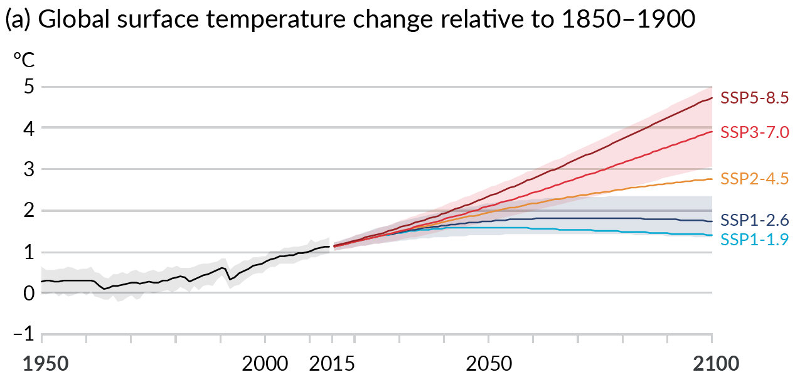
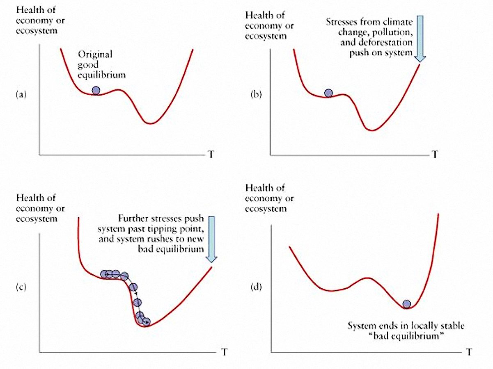
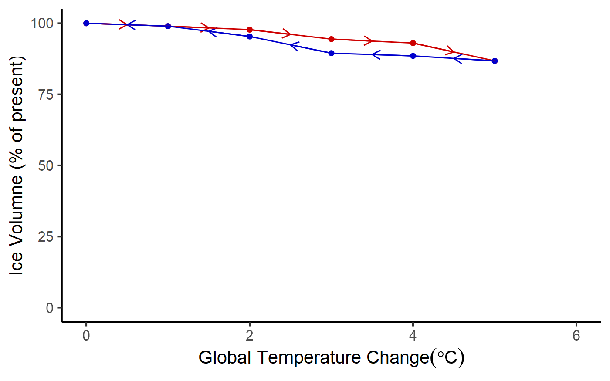
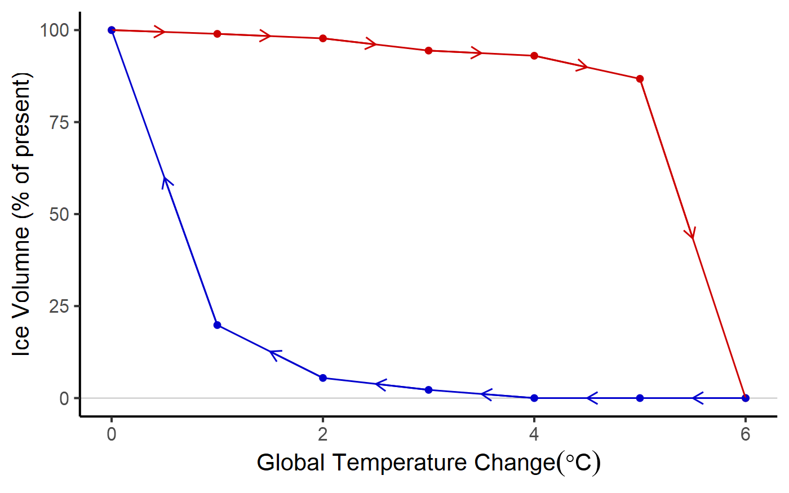
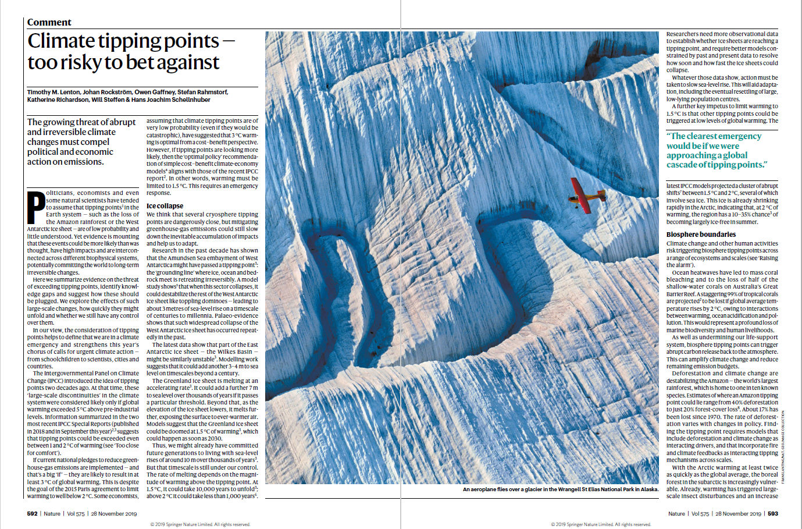
T. Lenton et al., Nature 575, 592 (2019).
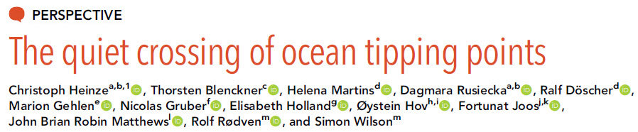
C. Heinze, et al. (2021). PNAS 118. https://doi.org/10.1073/pnas.2008478118
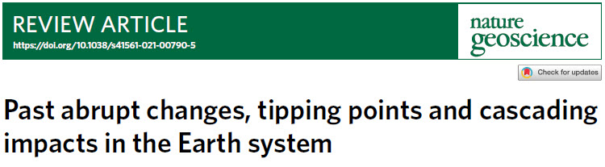
V. Brovkin, et al. (2021). Nature Geoscience, 14, 550. https://doi.org/10.1038/s41561-021-00790-5
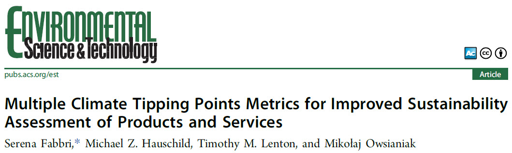
S. Fabbri, S. et al. (2021). Environ. Sci. & Technol., 55, 2800. https://doi.org/10.1021/acs.est.0c02928
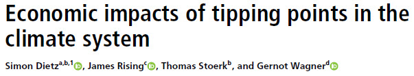
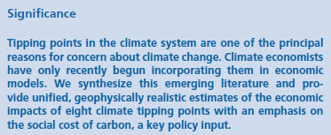
S. Dietz et al., (2021). PNAS, 118. https://doi.org/10.1073/pnas.2103081118
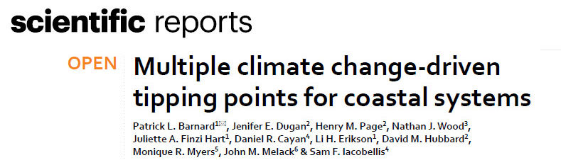
P. Barnard et al. (2021). Scientific Reports 11, 15560. https://doi.org/10.1038/s41598-021-94942-7
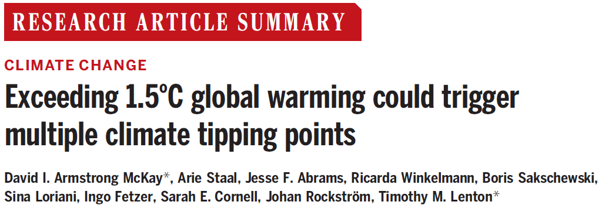
D.I. Armstrong McKay et al. (2022). Science 377, 1171. https://doi.org/10.1126/science.abn7590
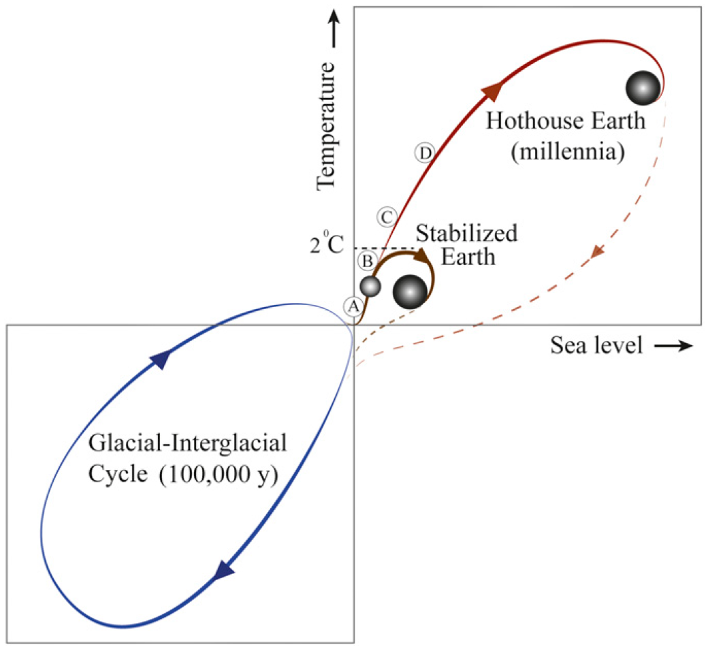
W. Steffen et al. (2018). PNAS 115, 8252. https://doi.org/10.1073/pnas.1810141115
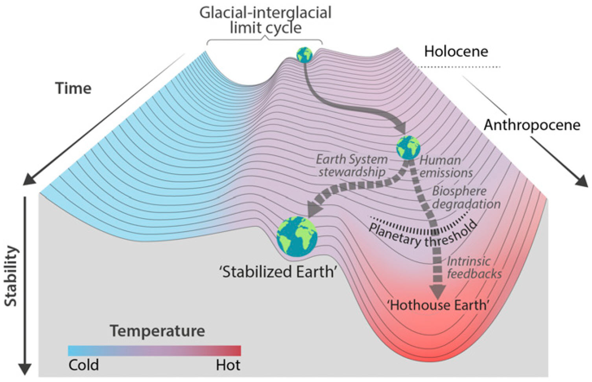
W. Steffen et al. (2018). PNAS 115, 8252. https://doi.org/10.1073/pnas.1810141115
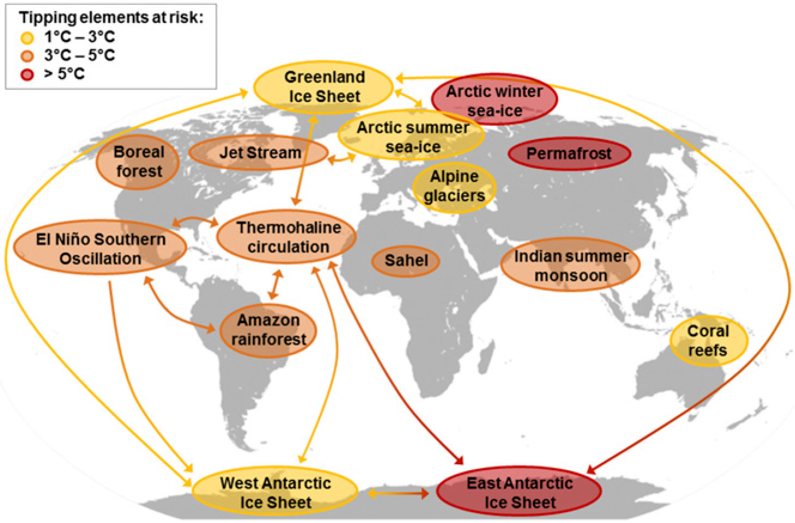
W. Steffen et al. (2018). PNAS 115, 8252. https://doi.org/10.1073/pnas.1810141115
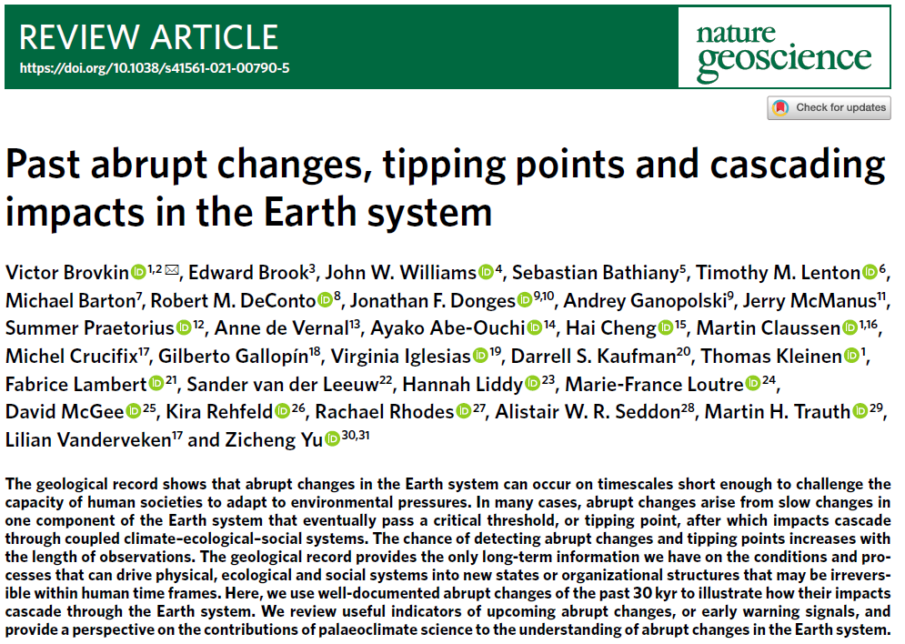
V. Brovkin et al. (2021). Nature Geoscience 14, 550. https://doi.org/10.1038/s41561-021-00790-5
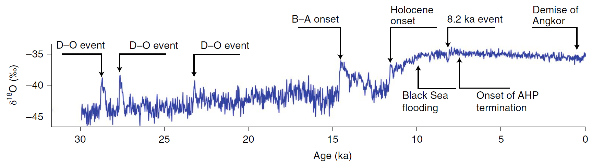
V. Brovkin et al. (2021). Nature Geoscience 14, 550. https://doi.org/10.1038/s41561-021-00790-5
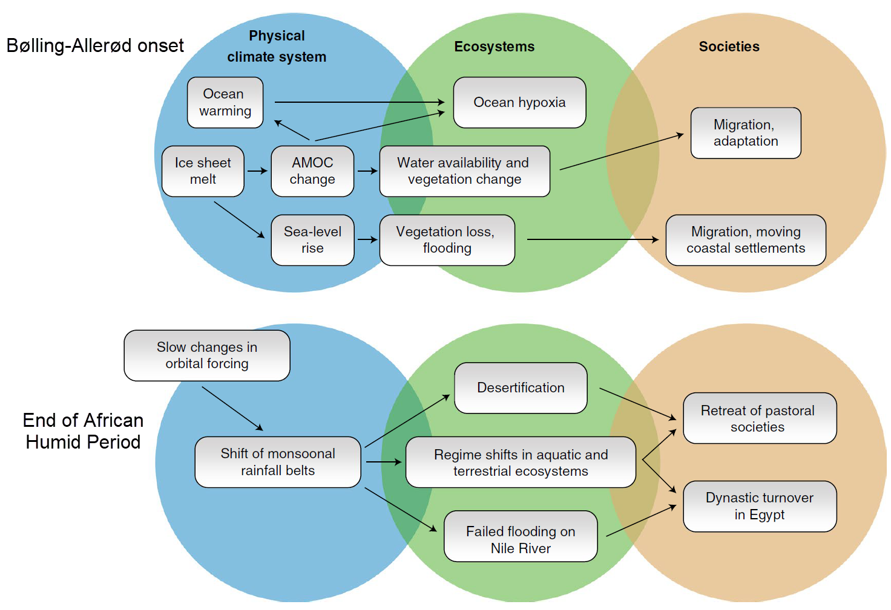
V. Brovkin et al. (2021). Nature Geoscience 14, 550. https://doi.org/10.1038/s41561-021-00790-5
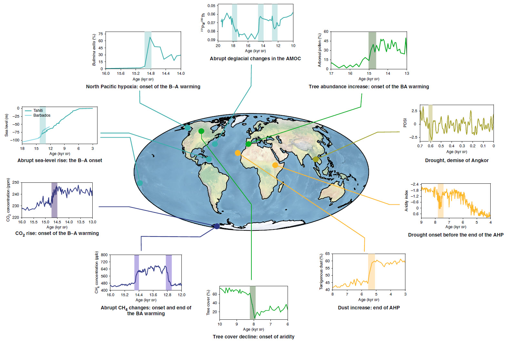
V. Brovkin et al. (2021). Nature Geoscience 14, 550. https://doi.org/10.1038/s41561-021-00790-5
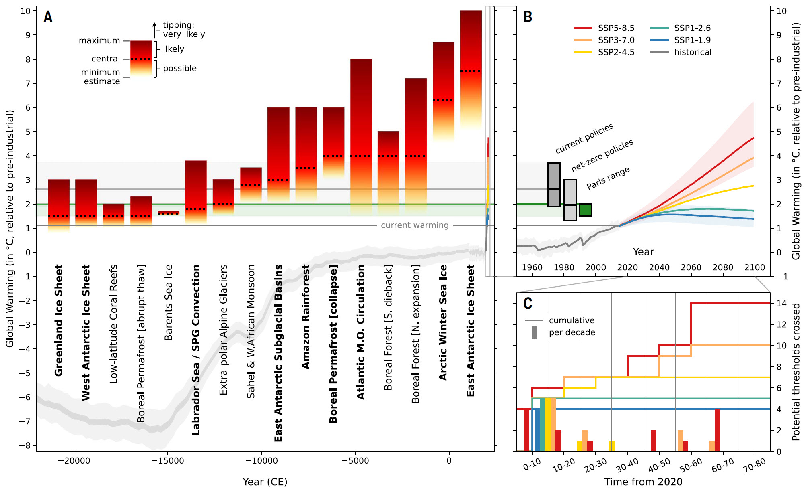
D.I. Armstrong McKay et al. (2022). Science 377, 1171. https://doi.org/10.1126/science.abn7950